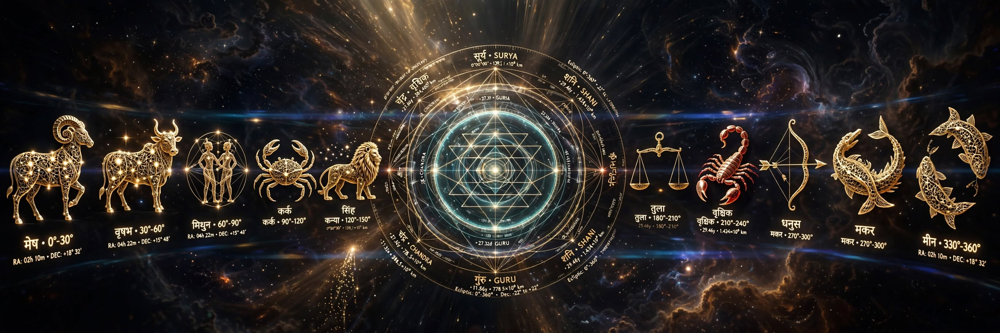
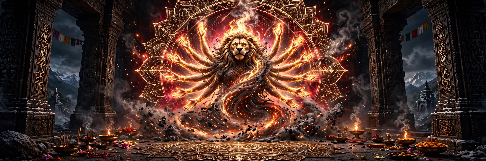

ANCIENT WISDOM • MODERN INTELLIGENCE
अंधविश्वास नहीं, गणितीय गणना और कर्म सिद्धांत। जब जीवन में अनिर्णय, व्यापारिक अवरोध या पारिवारिक संकट आए—तब भारतीय परंपराओं का सही संदर्भ और अध्ययन आपका मार्ग प्रशस्त करता है।
"मेरा मानना है कि इंसान की हर परेशानी को केवल बाहर से देखकर नहीं समझा जा सकता। कई बार समस्या परिस्थितियों में होती है, कई बार रिश्तों में, कभी अपने निर्णयों में और कभी उन बातों में जिन्हें हम किसी से कह भी नहीं पाते। मार्गदर्शन का पहला कदम सुनना है, दूसरा परिस्थिति को समझना और तीसरा उपलब्ध विकल्पों पर विचार करना।"
जब जीवन के सभी रास्ते बंद दिखाई दें, तब एक नए संकल्प की आवश्यकता होती है। जीवन में कभी-कभी ऐसा समय आता है, जब परिस्थितियाँ एक के बाद एक विपरीत होती चली जाती हैं। जिन रिश्तों पर भरोसा था, वे साथ छोड़ने लगते हैं। किए गए प्रयास निष्फल दिखाई देते हैं और आगे बढ़ने का कोई स्पष्ट मार्ग समझ नहीं आता।
ऐसे समय में मनुष्य केवल परिस्थितियों से ही नहीं, अपने अतीत, अपने निर्णयों और अपने कर्मों से भी सामना करता है। यही वह मोड़ है, जहाँ आत्ममंथन, अपनी भूलों का स्वीकार, पश्चाताप और एक दृढ़ संकल्प नया अर्थ प्राप्त करते हैं। यहीं से आरंभ होता है ब्रह्मास्त्र विधान का भाव।
ब्रह्मास्त्र विधान एक विशिष्ट अनुष्ठान है, जिसमें निर्धारित आध्यात्मिक एवं अनुष्ठानिक प्रक्रियाओं के साथ पश्चाताप, प्रायश्चित और संकल्प के भाव को महत्व दिया जाता है। इसका मूल विचार केवल बाहरी परिस्थितियों में समाधान खोजना नहीं, बल्कि अपने भीतर भी उस परिवर्तन की संभावना को स्वीकार करना है, जिसकी आवश्यकता जीवन को नई दिशा देने के लिए हो सकती है।
सनातन की कुछ तांत्रिक परंपराओं में माँ प्रत्यंगिरा को उग्र, शक्तिशाली और रक्षात्मक स्वरूप में आराध्य माना जाता है। उनकी उपासना का भाव भय पर नहीं, बल्कि श्रद्धा, अनुशासन और दिव्य संरक्षण की कामना पर आधारित होना चाहिए।
श्रद्धा में शक्ति। संकल्प में स्थिरता। आराधना में संरक्षण की कामना।
"समय का पहिया सदा एक सा नहीं रहता। जब कुंडली में छठा भाव या एकादश भाव पीड़ित होता है, तो मनुष्य अपनी श्रेष्ठ मेहनत के बाद भी कर्जे में दब जाता है।"
“अनुष्ठान संपन्न कराना एक प्रक्रिया है, लेकिन उसके शास्त्रीय आधार, उद्देश्य और विधान को समझना ही वास्तविक विशेषज्ञता है।”
पूजा करवाना एक बात है, पूजा को समझना दूसरी। KAALGYA इसी दूसरी योग्यता को महत्व देता है।
जहाँ कर्मकांड समाप्त होता है, वहीं से उसके शास्त्रीय औचित्य को समझने की आवश्यकता शुरू होती है।
क्या आपने अब तक केवल पूजा करवाई है, या कभी यह भी जाना है कि वह पूजा आपके लिए क्यों निर्धारित की गई थी?
हमारा उद्देश्य कर्मकांड की संख्या बढ़ाना नहीं, अनुष्ठान के चयन से लेकर उसके विधान तक हर पहलू को समझना है।
आपकी श्रद्धा केवल आश्वासनों की नहीं, शास्त्रीय समझ और उत्तरदायी मार्गदर्शन की अधिकारी है।

राशिफल केवल भविष्य जानने का माध्यम नहीं, समय को समझने की एक वैदिक दृष्टि है।
ग्रहों की गति संकेत देती है, शास्त्र उनका अर्थ समझाते हैं और सही विवेक जीवन की दिशा निर्धारित करता है। भारतीय ज्योतिष परंपरा में राशिफल केवल सामान्य भविष्यवाणी नहीं, बल्कि ग्रहों की स्थिति, राशि स्वभाव, गोचर एवं ज्योतिषीय सिद्धांतों के अध्ययन से निर्मित एक महत्वपूर्ण मार्गदर्शन है।
KAALGYA में हमारा प्रयास राशिफल को केवल शब्दों का संग्रह बनाना नहीं, बल्कि शास्त्रीय आधार, सूक्ष्म ज्योतिषीय अध्ययन और उत्तरदायी विवेचन के साथ प्रस्तुत करना है।
हमारा विश्वास है कि ज्योतिष का उद्देश्य मन में भय उत्पन्न करना नहीं, बल्कि समय की प्रकृति को समझने, अवसरों के प्रति सजग रहने और चुनौतियों का सामना विवेकपूर्वक करने की दृष्टि प्रदान करना है।
भारतीय ज्योतिष परंपरा में मुहूर्त का संबंध किसी कार्य के आरंभ के लिए समय-निर्धारण से है। विवाह, गृह-प्रवेश, भूमि पूजन, यात्रा, संस्कार, यज्ञ तथा कृषि जैसे कार्यों के लिए अलग-अलग नियमों का वर्णन मिलता है। मुहूर्त का निर्णय केवल तिथि देखकर नहीं किया जाता। इसमें तिथि, वार, नक्षत्र, योग, करण, लग्न, ग्रहों की स्थिति और कार्य-विशेष के नियमों का विचार किया जाता है। प्रत्येक कार्य की प्रकृति के अनुसार इन नियमों का महत्व बदलता है। दैवज्ञ राम रचित मुहूर्तचिन्तामणि में संस्कार, विवाह, यात्रा, वास्तु तथा गृह-प्रवेश के अलग-अलग प्रकरण हैं। अन्य धर्मशास्त्रीय, गृह्यसूत्रीय और वास्तु-ग्रंथों में भी विभिन्न संस्कारों एवं कर्मों का विधान मिलता है।
क्या आपके जीवन, परिवार या भाग्य में कुछ ऐसे पैटर्न हैं जो बार-बार दोहराते हैं?
Powerful vastu tips और energy correction secrets जो घर में positivity activate करते हैं।
विवाह संगतता, कुंडली मिलान, नाड़ी दोष और वैवाहिक जीवन के ज्योतिषीय रहस्य।
पितृपक्ष विशेष मार्गदर्शन, पितृ दोष निवारण, श्राद्ध विधि और तर्पण विधि।
प्राचीन ऋषियों के गुप्त ज्ञान को आधुनिक विज्ञान की दृष्टि से समझना।
"यह कालज्ञ के विशेष दिशा यंत्र, कार्तवीर्जुन यंत्र एवं नृसिंह यंत्र के चैतन्य ऊर्जा-मंडल से अभिमंत्रित स्थान है।"
"Paaji tussi sach vich rab de bande ho! Sade transport business vich 2 saal ton masla chal reha si... 40 dina de andar sari payment clear ho gayi."
"He pinpointed the exact year of my career downfall. Followed the remedial regimen and secured my promotion to VP within 3 months."
"3 साल से रिश्ता नहीं मिल रहा था। Guruji ने जो गुरु-शुक्र ग्रह शोधन बताया उसके 2 महीने में शादी पक्की हो गई।"
"कार्तवीर्जुन यंत्र स्थापना के बाद से हमारे टेक्सटाइल शोरूम में ग्राहकों की आवाजाही दोगुनी हो गई है। आभार गुरुजी!"
"अज्ञात भय और भयंकर अनिद्रा से परेशान था। सुकून कक्ष के उपायों और रुद्राक्ष धारण से चमत्कारिक शांति मिली।"
"चिकित्सकीय निराशा के बाद हमने कालज्ञ जी से गर्भधारण मुहूर्त और पुंसवन विधान लिया। आज हमारे घर स्वस्थ पुत्र रत्न है।"
"प्रॉपर्टी विवाद पिछले 6 साल से कोर्ट में अटका था। सही होरा और नक्षत्र चयन कर कदम उठाने से फैसला हमारे पक्ष में आया।"
"कैनेडा स्टडी वीज़ा बार-बार रिजेक्ट हो रहा था। गुरुजी के मार्गदर्शन और राहु शांति विधान के बाद पहली बार में अप्रूवल मिला।"
"ऐसी सटीक गणितीय गणना मैंने जीवन में पहली बार देखी है। इन्होनें बिना बताए मेरी हर बात बिल्कुल सटीक पकड़ ली।"
करियर या विवाह से जुड़ी किसी एक समस्या पर स्पष्टता।
12 भावों का 45 मिनट गहन गणितीय व आध्यात्मिक शोधन।
कालसर्प, पितृ दोष, मांगलिक दोष एवं भारी शनि शांति।
बिना तोड़-फोड़ 16 दिशाओं व 32 पद-देवताओं का ऊर्जा कीलन।
अंधविश्वास, रटे-रटाए उपाय और सतही धारणाओं से मुक्त—KAALGYA का प्रमाणिक, तार्किक एवं अनुभूत दृष्टिकोण।
"जब संकल्प असाधारण हो, तो विधान भी विशिष्ट होना चाहिए।"

सिंहमुखी शक्ति, दिव्य तेज और आध्यात्मिक संरक्षण का प्रतीक।
तंत्र की गहन परंपरा। मंत्र की शुद्धता। शक्ति का अनुशासन।
जहाँ कामना हो शांति की, वहाँ प्रार्थना हो सद्गति की।
"ज्ञान का उद्देश्य केवल भविष्य नहीं—जीवन के हर अवरोध को गणितीय सटीकता से भेदना है।"
"काल से परे। सत्य की ओर।"